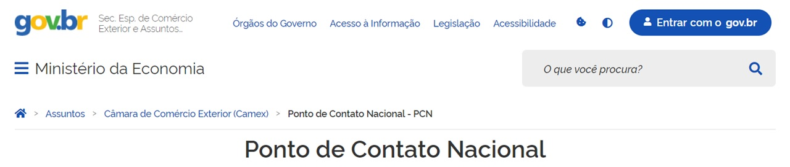

2022 - Subsecretaria de Estratégia Comercial
A atuação da Subsecretaria de Estratégia Comercial tem por objetivo promover a melhoria da competitividade e da produtividade da economia brasileira por meio da apresentação de propostas para o aprimoramento da política comercial brasileira e, em especial, por meio da gestão e coordenação dos mecanismos de alteração tarifária, com vistas a uma maior inserção do Brasil nas cadeias globais de valor e nos fluxos internacionais de comércio.

2020/2021 - Ponto de Contato Nacional do Brasil com a OCDE
O PCN é a representação institucional responsável por garantir a implementação das Diretrizes para Empresas Multinacionais, construídas no âmbito do Comitê de Investimentos da Organização para Cooperação e Desenvolvimento Econômico (OCDE).
2016/2020 - Cadastro Único
Chefe de Divisão e Coordenador Geral Substituto
O Cadastro Único é uma base de dados que serve para identificar e conhecer as pessoas e famílias mais vulneráveis do país e, assim, ajudar o Governo Federal a desenvolver políticas públicas voltadas para essa população. Atualmente 28 programas federais que utilizam a base do Cadastro Único para a gestão de suas ações, como o Programa Auxílio Brasil, o Benefício de Prestação Continuada, a Tarifa Social de Energia Elétrica, o Criança Feliz, entre outros.
2013/2016 - Programa de Aquisição de Alimentos
O Programa de Aquisição de Alimentos (PAA) possui duas finalidades básicas: promover o acesso à alimentação e incentivar a agricultura familiar.
{kind=link}
{kind=link}
{kind=link}
{kind=link}